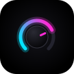
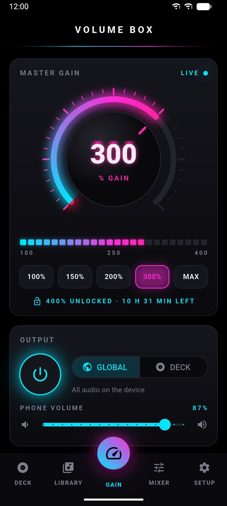
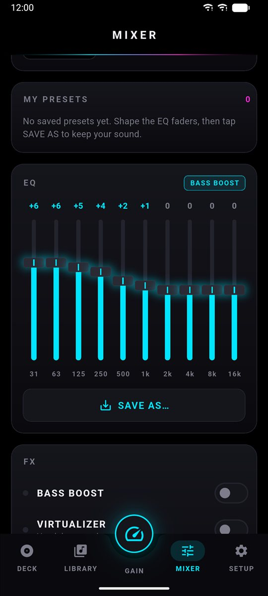
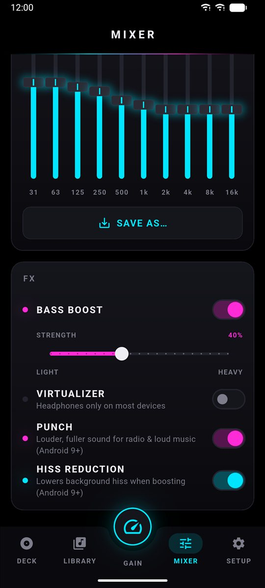

Volume Box
Volume booster, equalizer & music player for Android
Make quiet videos, calls, podcasts and music louder and clearer. Boost up to 400% with a knob or one tap, shape the sound with a 10-band equalizer, add Bass Boost or Punch, and play your own music, radio and podcasts, all in one dark, DJ-style app you can control from the notification.
A look inside



New in version 1.0.2
Made with feedback from our testers.
Finer sound control
A 10-band equalizer (31 Hz to 16 kHz), and Bass Boost no longer makes voices quieter at high volume.
Boost in one tap
100%, 150%, 200%, 300% and MAX buttons under the knob, your phone's volume right beside it, and − / + in the notification.
Easier to get started
A short tour on first launch, a tablet layout, and rate, share and feedback in Settings. Updates download in the background.
Everything for better sound
Built and tuned by measuring the real output, so the boost you set is the boost you hear.
Boost up to 400%
A big DJ-style gain knob plus one-tap buttons. A built-in limiter keeps loud audio clean instead of letting it crackle.
10-band equalizer
11 presets (Bass Boost, Vocal, Rock, Podcast, Night Mode and more), plus your own named presets.
Bass Boost & Punch
Deeper bass without dimming everything else, Punch for a fuller sound, and Hiss reduction for quiet recordings.
Global or Deck mode
Global boosts audio from other apps too. Deck processes only music played inside Volume Box.
Your music library
Every song on your phone, playlists, shuffle and repeat, a sleep timer and lock-screen controls.
Radio & podcasts
Thousands of live stations and podcasts, your own Subsonic or Navidrome music server, or any stream link. Adult and explicit shows are left out.
Control from anywhere
Change the boost with − and + in the notification while other apps play, and set your phone's own volume right next to the knob.
Phones & tablets
A two-column layout on tablets and in landscape, and a short tour that shows what each tab does.
How it stays free
No subscriptions and no payments. Volume Box shows a few small ads instead.
Small banners
One small banner on three screens, placed away from the controls.
Boost to 200%, always free
Want more? Watch one short video to unlock up to 400% until midnight.
Online mode, one video a day
Radio, podcasts and links unlock until midnight after one video. Your own music and your own server never ask.
Questions
Do I need an account?
No. There's no sign-up at all. Your settings, presets and playlists are stored only on your phone.
Why is the difference smaller on radio?
Radio stations are already mastered close to full volume. At full phone volume, Volume Box limits them so they stay clean, so 400% adds about +5 dB instead of +12 dB. Quieter audio, or a lower phone volume, gets the full boost.
What's the difference between Global and Deck mode?
Global mode applies the boost and EQ to all audio on your phone, such as YouTube or Spotify, and keeps running in the background with a notification. Deck mode only processes music you play inside Volume Box.
Does Bass Boost make everything else quieter?
Not any more. At high boost, extra bass used to make the limiter turn the whole sound down. Since version 1.0.2 only the bass is held back, so voices keep their level. When the sound is already at its loudest, extra bass can't add much, but it no longer takes anything away.
Can I change the boost without opening the app?
Yes. In Global mode the notification shows the boost with −10% and +10% buttons and a Turn off button. The same free limit applies: up to 200%, or 400% after the day's video.
How do I get updates?
Through Google Play. Volume Box also checks by itself: a new version downloads in the background and a RESTART button appears when it's ready. Nothing restarts without you.
Can I see the tour again?
Yes: Settings → Support → Show the tour.
Why does it ask for Notification access?
Only for the optional "Other apps" panel, which shows and controls what other music apps are playing. Volume Box doesn't read, store or share your notifications.
Which features need Android 9 or newer?
Punch and Hiss reduction, and the most accurate boost and EQ. On Android 8 the app uses Android's standard effects instead.
Look after your ears and speakers. High boost can damage hearing and small speakers. Start low and raise it gradually, especially with headphones.
Help & feedback
Something not working, or an idea to make Volume Box better? Use Settings → Send feedback in the app, or email us and include your phone model and Android version if you can.